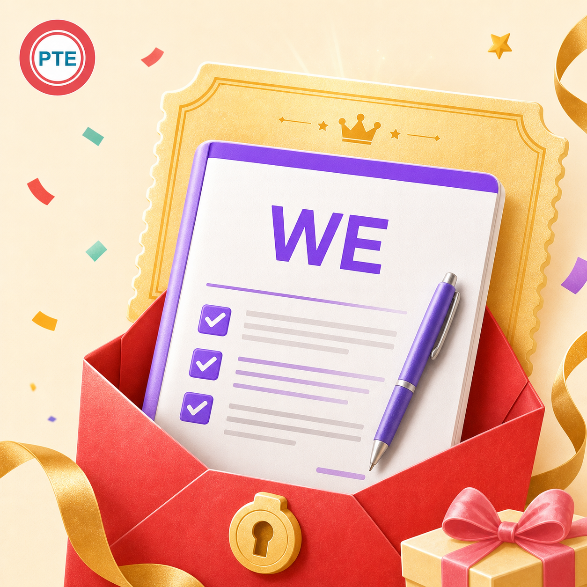

构思不能拖太久，需要快速选定立场和两组主体论点。
小圆 PTE 突击认真整理每一个得分点
WE 专项Write Essay · 议论文写作
恭喜宝宝，找到 WE 观点宝库！
看懂题目却想不到观点？有观点却写不出解释和例子？这份资料为高频话题准备中英双语题目、正反观点、提炼说明与例句，让 20 分钟写作先有内容，再有结构。
纯 PDF 图文英文题目 + 中文正反观点提炼 + 例句高频话题

先看清这道题
20 分钟，写一篇 200–300 词议论文。
WE 要求围绕给定话题完成有立场、有论证的英文作文。时间里要完成审题、构思、写作与检查；清楚回应题目、组织段落、发展观点，并控制语言错误，是稳定发挥的核心。
内容要充分，同时避免为了凑字数重复表达。
围绕题目建立立场，用解释和例子支撑观点。
真实截图
WE 资料内页展示
英文题目、中文翻译、正反观点、提炼说明与例句的实际排版。

本商品仅提供 PDF 图文资料，不包含视频课程、音频讲解、录音或作文批改服务。
资料长这样
先解决“写什么”，
再练“怎么写得完整”。
参考商品资料页：题目提供英文描述与中文翻译，正反两方各整理多组观点，每组再补充提炼说明与例句，适合快速搭建自己的素材库。
Getting married before finishing school or getting a job
审题 英文题目 + 中文翻译，避免跑题
正方 Financial instability · Career interruption · Increased stress
反方 Emotional support · Shared responsibilities
展开 观点 + 英文解释 + 中文理解 + 例句
- 读题目双语呈现
先准确理解争议点和作答范围。 - 选正反观点成组整理
快速选择最熟悉、最好发展的论点。 - 展提炼与例句配套
避免主体段只有一句观点，没有解释。 - 组形成个人素材库
跨话题复用因果、影响和举例逻辑。
为什么适合突击
考试不是等灵感，是快速调用练熟的观点链。
双语题目帮助确认立场范围，减少理解偏差和离题风险。
正反角度一起准备，遇到 agree/disagree 题更容易选择。
观点、原因、影响和例句连成链，主体段不再干瘪。
建议这样冲
不要整篇死背，练会“审题—选点—展开”。
5 分钟
只练审题和列提纲
确定立场，写出两个主体论点和每段的解释方向。
10 分钟
把一个观点扩成完整段
按观点—原因—影响—例子展开，练习逻辑连接。
20 分钟
整篇限时写作并检查
最后核对字数、拼写、主谓一致和是否回应题目。
购买后如何领取
安全验证，生成你的专属 PDF。
购买后进入 WE 领取链接，系统按商品入口生成专属文件。
填写中国大陆手机号
获取并输入短信验证码，确认是你本人领取。
填写小红书订单号
订单号格式为 P 开头加 18 位数字，请从订单详情复制。
生成专属水印文件
系统为资料每一页加入完整手机号与“祝考试好运 UPUP”水印。
下载并及时保存
生成成功页会显示具体北京时间，建议在生成后 14 天内完成下载。
为生成和保护你的专属资料，系统会保存手机号和订单号，并在资料每一页添加完整手机号水印。题库按当前资料版本整理，实际考试题目以考场为准。
不再怕没观点，
下笔更快、更稳。
如果觉得有用，就拿下吧！早用一天，多积累亿点！有任何问题欢迎联系小圆——助力每个突击 PTE 的小伙伴实现梦想～
拿下 WE 宝藏资料